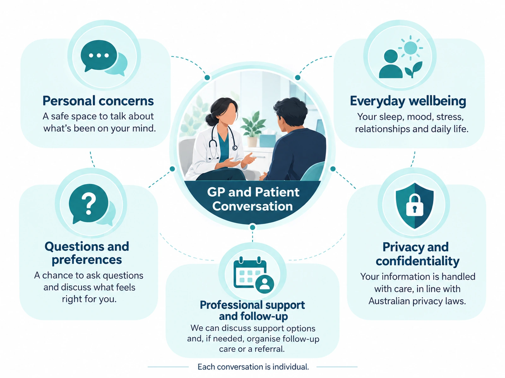

What is this service?
Primary healthcare for mental wellbeing.
Mental health care in general practice can support people experiencing anxiety, low mood, stress, burnout, sleep concerns, adjustment difficulties or other changes in mental wellbeing.
A GP can assess your symptoms, consider physical and mental health together, discuss treatment options and arrange referral to other mental health professionals where appropriate.
When clinically appropriate, a GP may also prepare a Mental Health Treatment Plan to support structured treatment and eligible Medicare-rebated care.
Why does it matter?
Mental wellbeing is part of overall health.
Mental health can affect sleep, relationships, work, study, physical symptoms and the ability to manage other health conditions. Early support can help clarify what is happening and what options are available.
Seeing a practitioner you feel comfortable with can make it easier to discuss sensitive concerns and review progress over time.
How can we help?
Assessment, treatment planning and follow-up.
Depending on your situation, GP mental health care may include:
- Assessment of symptoms and how they are affecting daily life
- Discussion of treatment and self-management options
- Mental Health Treatment Plans when clinically appropriate
- Medication discussion and review where appropriate
- Referral to psychologists, psychiatrists or other services when needed
- Follow-up to review progress, treatment response and changing needs
- Consideration of physical health issues that may affect mental wellbeing
Understanding your care
A mental health appointment can take time.
It can help to book a longer appointment so there is enough time to discuss how you have been feeling, how long symptoms have been present and how they are affecting your daily life.
You may wish to write down important symptoms, medicines and questions before the appointment. You can also ask about bringing a trusted support person if that would help you feel more comfortable.

What should I do next?
Start with a GP appointment and enough time to talk.
If you would like to talk about your mental health, booking a GP appointment is an appropriate place to start. Ask reception whether a longer consultation is suitable.
- Choose a practitioner with a verified mental health interest if you prefer.
- Book enough time to discuss your concerns without feeling rushed.
- Bring your current medication list and any relevant mental health care information.
- If you or someone else is in immediate danger, call Triple Zero (000). Lifeline is available 24/7 on 13 11 14 for crisis support.
Planning your appointment
Booking, preparation, follow-up and costs.
How to book
Book a longer GP appointment if possible so there is enough time to discuss your concerns, history and treatment options.
Before your appointment
You may find it helpful to write down the main concerns, medicines, supports already in place and any questions you want to cover. You can bring a trusted support person if you wish.
After your appointment & follow-up
Mental health care often needs follow-up. Your GP may review progress, medicines, referrals and goals over time and adjust the plan with you.
Costs
Standard Medicare-eligible GP consultations are 100% bulk billed at Woolloongabba Medical Centre for patients with a valid Medicare card. Procedures, consumables, medicines or devices, reports and other non-Medicare services may attract additional fees. Reception will confirm the current practice charge before treatment or booking wherever practical. External providers set and bill their own fees.
Patient questions
Frequently Asked Questions
Can I talk to my GP about mental health concerns?
Yes. Mental health discussions are an important part of primary healthcare and can be raised with your GP.
What is a Mental Health Treatment Plan?
A Mental Health Treatment Plan is prepared by a GP when clinically appropriate and can support structured treatment and referral. Medicare eligibility and requirements should be confirmed at the time of care.
How much appointment time should I allow for a mental health discussion?
Mental health concerns often benefit from adequate consultation time. Ask reception whether a longer appointment is appropriate when booking.
What should I do if there is an immediate risk to safety?
If you or someone else is in immediate danger or experiencing a life-threatening emergency, call Triple Zero (000) or attend the nearest emergency department.
Practical information
Planning your care.
Information to help you prepare for your appointment and understand what may happen next.
Healthcare Knowledge Centre
Patient guides for this area of care.
Read patient information alongside the service details, then choose an appropriate practitioner or appointment.
Appointments
Book Appointment.
Start with the published mental health lead, or open the clinic list if you prefer another GP.
Published lead
Booking note: Dr Sumita Singh does not bulk bill for insurance patients.
Clinic booking list